Próximas fechas: pendiente de publicación
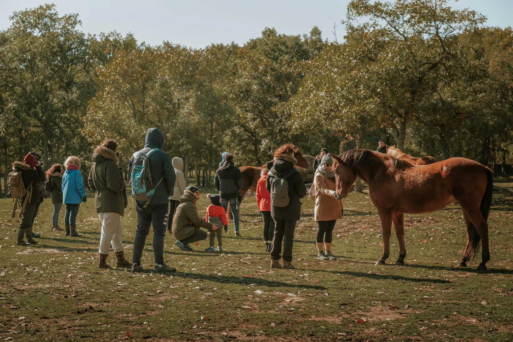
Actividades
Ven a mirar el mundo desde la altura de un caballo.
Jornadas de puertas abiertas, visitas guiadas y encuentros para conocer a la familia Winston y aprender a compartir su espacio con respeto.
Puertas abiertas
Conoce a 60 equinos, gatos, perros, ovejas y una preciosa cabra.
Próximas fechas: pendiente de publicación. Puedes consultarnos por WhatsApp si quieres recibir información sobre las siguientes jornadas.
La experiencia
Una mañana para conocer, comprender y sentir.
Bienvenida y visita guiada
Conocerás a los habitantes, por qué llegaron y cómo se relacionan. Compartiremos claves de etología para interpretar sus acciones y reacciones.
Tentempié y tienda solidaria
Media hora para disfrutar de un aperitivo vegetariano-vegano y descubrir regalos cuya compra ayuda al Santuario.
Visita a otra finca
Una segunda parte de la experiencia para conocer más habitantes en un entorno natural especial.
No se pueden traer animales, para evitar problemas con los habitantes del Santuario. El horario puede variar según la estación.
Así se viven las jornadas
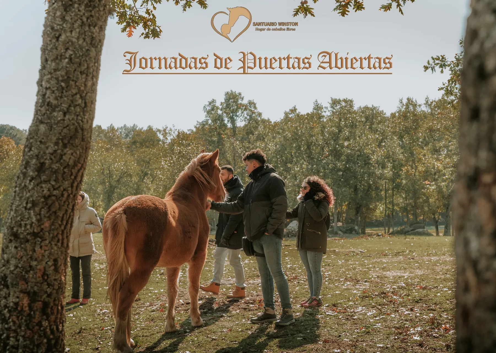
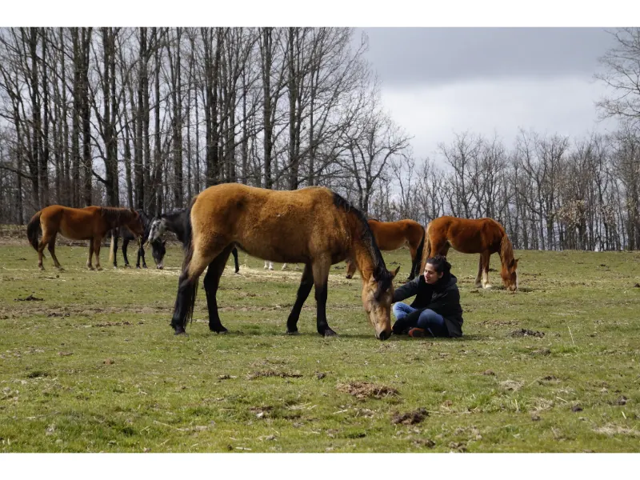
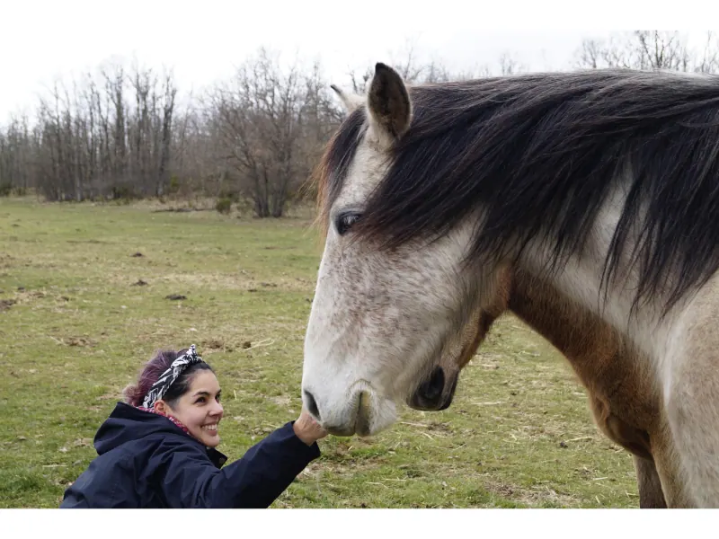
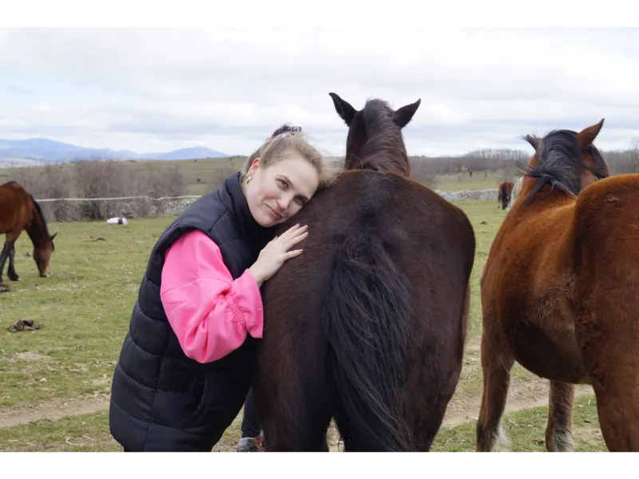
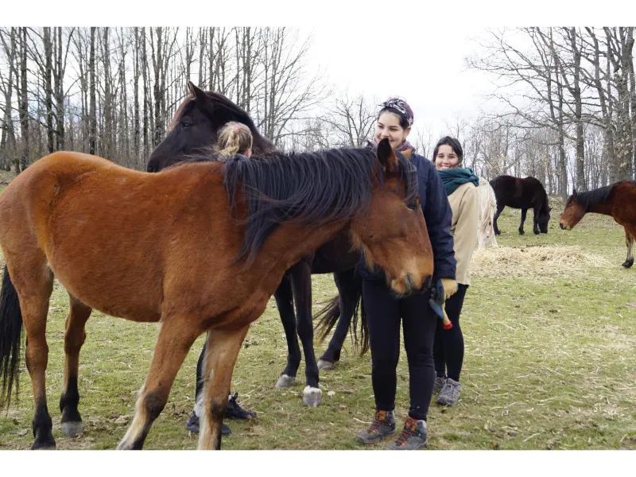
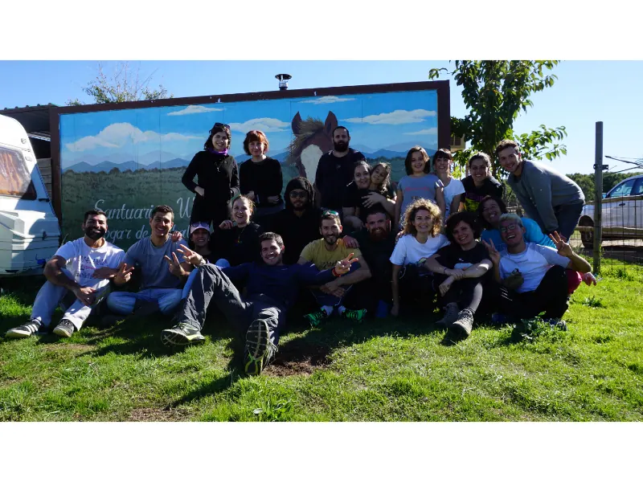
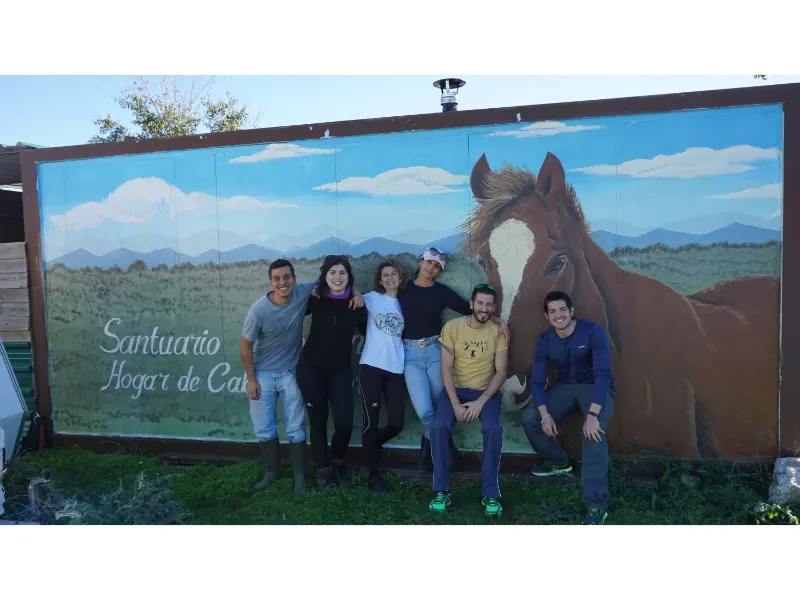
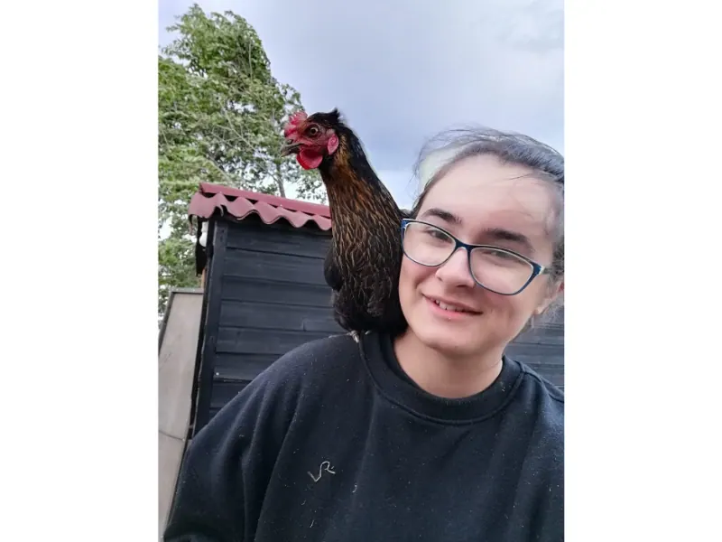
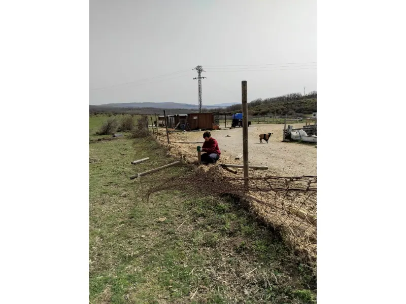
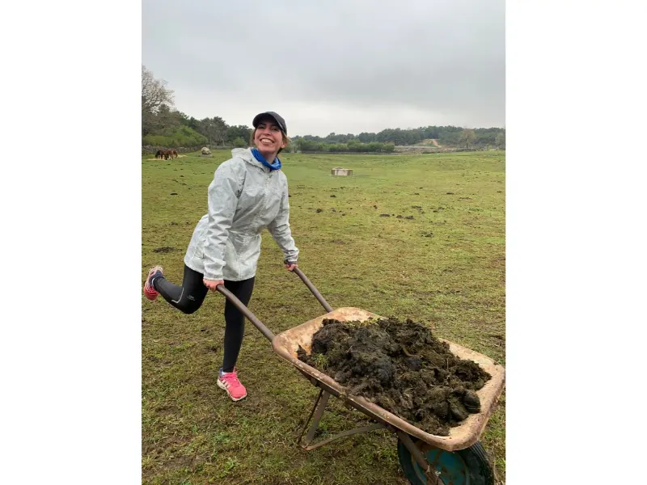

Archivo de actividades
Encuentros que ya forman parte de nuestra historia.
Conservamos estos contenidos de la web actual como archivo, diferenciándolos de las convocatorias vigentes de 2026.
Jornadas de puertas abiertas · primavera de 2026
Sábado 21 de marzo de 2026 · Sábado 18 de abril de 2026 · Sábado 9 de mayo de 2026 · Domingo 24 de mayo de 2026.
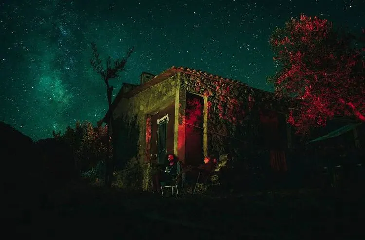
Actividad celebrada
Taller de iniciación a la fotografía nocturna
Una noche de acampada para aprender parámetros de cámara, lightpainting, fotografía bajo un cielo sin contaminación lumínica y edición básica en Lightroom. Incluyó cena y desayuno veganos y destinó todos los beneficios al Santuario.
Ver programa completo
La actividad estaba abierta a cámaras y teléfonos con modo manual. Podía realizarse individualmente o en grupo y cada participante recibía las fotografías realizadas.
Sábado: 16:00 bienvenida y montaje de tiendas; 17:00 teoría sobre fotografía nocturna y parámetros; 20:00 cena vegana y cata de quesos veganos; 21:00 práctica; 01:00 acampada.
Domingo: 10:00 café y visionado; 11:00 edición en Lightroom; final aproximado a las 13:00.
El donativo era de 50 € e incluía cena y desayuno. Información histórica: 690 143 920 o 646 527 879.
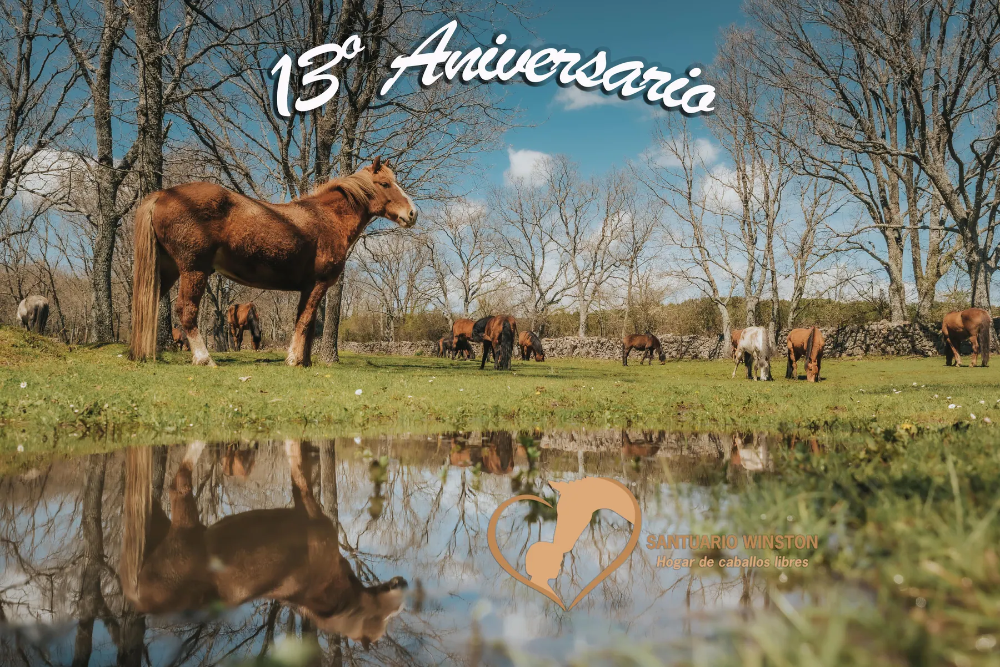
19 de octubre de 2025
Décimo tercer aniversario
Una jornada de paseos para conocer las manadas, juegos, talleres, buffet vegetariano-vegano y mercadillo solidario para ayudar a afrontar el invierno.
Ver información completa
El encuentro se celebró de 11:00 a 17:00 y conmemoró 13 años dedicados a los caballos y a los demás seres del Santuario. El buffet incluyó paella de verduras y setas, albóndigas veganas en salsa y otras propuestas.
El donativo publicado fue de 20 € por adulto y 10 € para niños de 4 a 13 años, mediante el IBAN ES89 2100 1277 8113 0027 3677. La comida se abonaba por separado y se pedía indicar por WhatsApp si la reserva incluía comida.